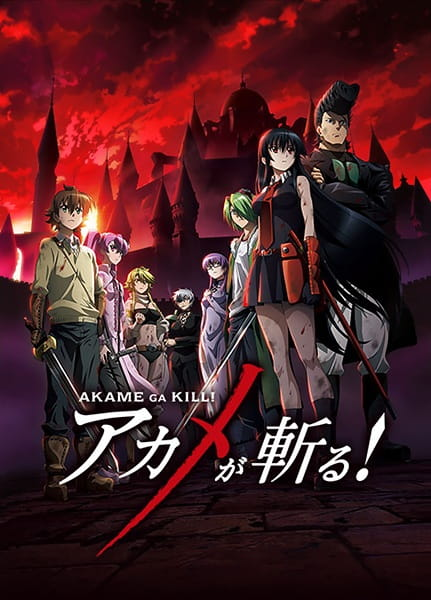

Anime to Watch - My Personal Recommendations
Trigun

Rating: 9/10 - Top Tier
Where to Watch: Hulu & Crunchyroll
Vash the Stampede is the man with a $$60,000,000,000 bounty on his head. The reason: he's a merciless villain who lays waste to all those that oppose him and flattens entire cities for fun, garnering him the title "The Humanoid Typhoon." He leaves a trail of death and destruction wherever he goes, and anyone can count themselves dead if they so much as make eye contact—or so the rumors say. In actuality, Vash is a huge softie who claims to have never taken a life and avoids violence at all costs.
With his crazy doughnut obsession and buffoonish attitude in tow, Vash traverses the wasteland of the planet Gunsmoke, all the while followed by two insurance agents, Meryl Stryfe and Milly Thompson, who attempt to minimize his impact on the public. But soon, their misadventures evolve into life-or-death situations as a group of legendary assassins are summoned to bring about suffering to the trio. Vash's agonizing past will be unraveled and his morality and principles pushed to the breaking point.
Wicked City
Rating: 9/10 - Top Tier
Where to Watch: Tubi & Amazon Prime
There is Earth, our familiar world, and then there is the Black World, a parallel dimension that very few people are aware of. For centuries, a pact between the two worlds has been observed to maintain peace, and terms must be negotiated and renewed soon to continue relative harmony.
This time around, there is a militant faction that will stop at nothing to prevent the signing of a new treaty for inter-dimensional peace. Two agents of the elite organization known as the Black guards—defenders of the balance between the two worlds—are charged with ensuring the success of the treaty.
Director Yoshiaki Kawajiri (Ninja Scroll) blends stylish eroticism, graphic horror and pulse-pounding action as these two race to consummate the peace treaty in time.
Angel Cop
Rating: 9/10 - Top Tier
Where to Watch: Crunchyroll & Amazon Prime
Sometime in the future, terrorism in Japan has become commonplace, and the police have become almost as brutal as criminals. A member of the Special Security Force known as Angel, is the best of the best, stopping at nothing in her fight for justice.
Things get interesting for Angel and her partner, Raiden, when they begin investigating a series of murders in which the victims were known criminals, killed in very unpleasant ways. This trio of killers known as Hunters, is a group of psychics that have banded together to hunt down the lowest scum in the city and bring them to justice.
After a couple of encounters between the cops and the psychics, two of the psychics begin to think that maybe they're not the good guys after all; but the third prefers killing to morality. Augmented by cybernetics from a mysterious source, this third hunter heads out on a killing spree, with the Special Security Force as the first target.
Even with help from the other two psychics and her newly cyborged partner (after an unfortunate accident), Angel is going to have her work cut out trying to find the rogue psychic and the organization behind the Hunters.
Phantom: Requiem of the Phantom
Rating: 9/10 - Top Tier
Where to Watch: Crunchyroll & Amazon Prime
Mafia is rife in America where assassinations are a regular occurrence on the streets. Inferno, a mysterious company, is behind most of these dealings through the use of their near-invincible human weapon, "Phantom."
One day, a Japanese tourist accidentally witnesses Phantom's latest murder. Desperate to escape, the tourist hides in a secluded building. However, Phantom, revealed to be a young woman named Ein, and the leader of Inferno "Scythe Master" captures the tourist and brainwashes him.
Given the name "Zwei," this once peaceful tourist is now a puppet of Inferno with no memories. Drawn into a world of lies, deceit, and violence, Zwei must fight to survive, hopefully to one day regain his memories and escape from this world where he is constantly on the brink of death.
Angel Beats

Rating: 9/10 - Top Tier
Where to Watch: Crunchyroll & Amazon Prime
Death is one of many mysteries that has left humanity in the dark since the dawn of time. However, the burning question of what happens to the soul after one dies is soon answered to 17-year-old Yuzuru Otonashi. Waking up with no previous memories in a dimension between life and death, he discovers the unsettling truth of the afterlife.
Taking the form of a high school, this bizarre dimension is designated to shelter those who died unwanted deaths. Feeling wronged by God during their earthly lives, the school's residents have decided to form the Afterlife Battlefront—a rebellious faction determined to oppose their god-like student council president, Kanade "Angel" Tachibana. The group's leader, Yuri Nakamura, recruits Otonashi in their fight against Angel in order to take control of their own lives. However, questioning the morality behind their actions, Otonashi takes a step behind the enemy lines to understand the opposing side of their common fate.
Naruto Shippuden
Rating: 9/10 - Top Tier
Where to Watch: Hulu & Amazon Prime
It has been two and a half years since Naruto Uzumaki left Konohagakure, the Hidden Leaf Village, for intense training following events which fueled his desire to be stronger. Now Akatsuki, the mysterious organization of elite rogue ninja, is closing in on their grand plan which may threaten the safety of the entire shinobi world.
Although Naruto is older and sinister events loom on the horizon, he has changed little in personality—still rambunctious and childish—though he is now far more confident and possesses an even greater determination to protect his friends and home. Come whatever may, Naruto will carry on with the fight for what is important to him, even at the expense of his own body, in the continuation of the saga about the boy who wishes to become Hokage.
My Hero Academia

Rating: 9/10 - Top Tier
Where to Watch: Crunchyroll, Hulu, Amazon Prime
The appearance of "quirks," newly discovered super powers, has been steadily increasing over the years, with 80 percent of humanity possessing various abilities from manipulation of elements to shapeshifting. This leaves the remainder of the world completely powerless, and Izuku Midoriya is one such individual.
Since he was a child, the ambitious middle schooler has wanted nothing more than to be a hero. Izuku's unfair fate leaves him admiring heroes and taking notes on them whenever he can. But it seems that his persistence has borne some fruit: Izuku meets the number one hero and his personal idol, All Might. All Might's quirk is a unique ability that can be inherited, and he has chosen Izuku to be his successor!
Enduring many months of grueling training, Izuku enrolls in UA High, a prestigious high school famous for its excellent hero training program, and this year's freshmen look especially promising. With his bizarre but talented classmates and the looming threat of a villainous organization, Izuku will soon learn what it really means to be a hero.
Black Clover

Rating: 9/10 - Top Tier
Where to Watch: Crunchyroll, Hulu, Amazon Prime
Asta and Yuno were abandoned at the same church on the same day. Raised together as children, they came to know of the "Wizard King"—a title given to the strongest mage in the kingdom—and promised that they would compete against each other for the position of the next Wizard King. However, as they grew up, the stark difference between them became evident. While Yuno is able to wield magic with amazing power and control, Asta cannot use magic at all and desperately tries to awaken his powers by training physically.
When they reach the age of 15, Yuno is bestowed a spectacular Grimoire with a four-leaf clover, while Asta receives nothing. However, soon after, Yuno is attacked by a person named Lebuty, whose main purpose is to obtain Yuno's Grimoire. Asta tries to fight Lebuty, but he is outmatched. Though without hope and on the brink of defeat, he finds the strength to continue when he hears Yuno's voice. Unleashing his inner emotions in a rage, Asta receives a five-leaf clover Grimoire, a "Black Clover" giving him enough power to defeat Lebuty. A few days later, the two friends head out into the world, both seeking the same goal—to become the Wizard King!
Spy Family

Rating: 9/10 - Top Tier
Where to Watch: Crunchyroll, Hulu, Amazon Prime
Corrupt politicians, frenzied nationalists, and other warmongering forces constantly jeopardize the thin veneer of peace between neighboring countries Ostania and Westalis. In spite of their plots, renowned spy and master of disguise "Twilight" fulfills dangerous missions one after another in the hope that no child will have to experience the horrors of war.
In the bustling Ostanian city of Berlint, Twilight dons the alias of "Loid Forger," an esteemed psychiatrist. However, his true intention is to gather intelligence on prominent politician Donovan Desmond, who only appears rarely in public at his sons' school: the prestigious Eden Academy. Enlisting the help of unmarried city hall clerk Yor Briar to act as his wife and adopting the curious six-year-old orphan Anya as his daughter, Loid enacts his master plan. He will enroll Anya in Eden Academy, where Loid hopes she will excel and give him the opportunity to meet Donovan without arousing suspicion.
Unfortunately for Loid, even a man of his talents has trouble playing the figure of a loving father and husband. And just like Loid is hiding his true identity, Yor—who is an underground assassin known as "Thorn Princess"—and Anya—an esper who can read people's minds—have no plans to disclose their own secrets either. Although this picture-perfect family is founded on deception, the Forgers gradually come to understand that the love they share for one another trumps all else.
Soul Eater

Rating: 9/10 - Top Tier
Where to Watch: Crunchyroll, Hulu, Amazon Prime
Death City is home to the famous Death Weapon Meister Academy, a technical academy headed by the Shinigami—Lord Death himself. Its mission: to raise "Death Scythes" for the Shinigami to wield against the many evils of their fantastical world. These Death Scythes, however, are not made from physical weapons; rather, they are born from human hybrids who have the ability to transform their bodies into Demon Weapons, and only after they have consumed the souls of 99 evil beings and one witch's soul.
Soul Eater Evans, a Demon Scythe who only seems to care about what's cool, aims to become a Death Scythe with the help of his straight-laced wielder, or meister, Maka Albarn. The contrasting duo work and study alongside the hot headed Black☆Star and his caring weapon Tsubaki, as well as the Shinigami's own son, Death the Kid, an obsessive-compulsive dual wielder of twin pistols Patty and Liz.
Soul Eater follows these students of Shibusen as they take on missions to collect souls and protect the city from the world's threats while working together under the snickering sun to become sounder in mind, body, and soul.
Clannad
Rating: 9/10 - Top Tier
Where to Watch: Amazon Prime,The Roku Channel
Tomoya Okazaki is a delinquent who finds life dull and believes he'll never amount to anything. Along with his friend Youhei Sunohara, he skips school and plans to waste his high school days away.
One day while walking to school, Tomoya passes a young girl muttering quietly to herself. Without warning she exclaims "Anpan!" (a popular Japanese food) which catches Tomoya's attention. He soon discovers the girl's name is Nagisa Furukawa and that she exclaims things she likes in order to motivate herself. Nagisa claims they are now friends, but Tomoya walks away passing the encounter off as nothing.
However, Tomoya finds he is noticing Nagisa more and more around school. Eventually he concedes and befriends her. Tomoya learns Nagisa has been held back a year due to a severe illness and that her dream is to revive the school's drama club. Claiming he has nothing better to do, he decides to help her achieve this goal along with the help of four other girls.
As Tomoya spends more time with the girls, he learns more about them and their problems. As he attempts to help each girl overcome her respective obstacle, he begins to realize life isn't as dull as he once thought.
Akame Ga Kill

Rating: 9/10 - Top Tier
Where to Watch: Hulu, Amazon Prime
Night Raid is the covert assassination branch of the Revolutionary Army, an uprising assembled to overthrow Prime Minister Honest, whose avarice and greed for power has led him to take advantage of the child emperor's inexperience. Without a strong and benevolent leader, the rest of the nation is left to drown in poverty, strife, and ruin. Though the Night Raid members are all experienced killers, they understand that taking lives is far from commendable and that they will likely face retribution as they mercilessly eliminate anyone who stands in the revolution's way.
This merry band of assassins' newest member is Tatsumi, a naïve boy from a remote village who had embarked on a journey to help his impoverished hometown and was won over by not only Night Raid's ideals, but also their resolve. Akame ga Kill! follows Tatsumi as he fights the Empire and comes face-to-face with powerful weapons, enemy assassins, challenges to his own morals and values, and ultimately, what it truly means to be an assassin with a cause.
Rurouni Kenshin
Rating: 9/10 - Top Tier
Where to Watch: Crunchyroll & Amazon Prime
In the final years of the Bakumatsu era lived a legendary assassin known as Hitokiri Battousai. Feared as a merciless killer, he was unmatched throughout the country, but mysteriously disappeared at the peak of the Japanese Revolution. It has been ten peaceful years since then, but the very mention of Battousai still strikes terror into the hearts of war veterans.
Unbeknownst to them, Battousai has abandoned his bloodstained lifestyle in an effort to repent for his sins, now living as Kenshin Himura, a wandering swordsman with a cheerful attitude and a strong will. Vowing never to kill again, Kenshin dedicates himself to protecting the weak. One day, he stumbles across Kaoru Kamiya at her kendo dojo, which is being threatened by an impostor claiming to be Battousai. After receiving help from Kenshin, Kaoru allows him to stay at the dojo, and so the former assassin temporarily ceases his travels.
Rurouni Kenshin: Meiji Kenkaku Romantan tells the story of Kenshin as he strives to save those in need of saving. However, as enemies from both past and present begin to emerge, will the reformed killer be able to uphold his new ideals?
Samurai 7
Rating: 9/10 - Top Tier
Where to Watch: Crunchyroll & Amazon Prime
In the far distant future, on a planet that might have been called "earth", there was a war between samurai who mechanized their bodies. After the long war, people enjoyed a modest peace.
Facing starvation and abductions at the hands of fearsome mechanized bandits (Nobuseri), the farmers of Kanna Village make the dangerous choice to hire samurai for protection. The village's water priestess, Kirara, her younger sister, Komachi, and a heartbroken villager, Rikichi, set off to hire willing samurai with nothing to offer but rice from their meager harvests. Through dangerous encounters and a bit of luck, seven samurai of varying specialties and experience are gathered for an epic battle against the bandits and the merchants that influence them.
Samurai 7 is based loosely upon Kurosawa Akira's famous movie "Seven Samurai"/"Shichinin no Samurai"